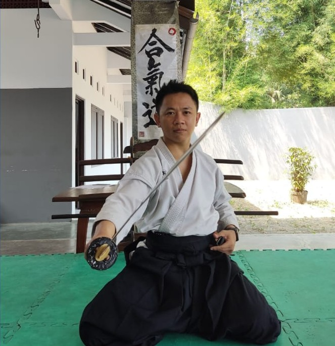

Sensei
Kami

Sensei Ibrahim Afriansyah
Dan 2
Kunjungi kami
Lokasi
Jl. Mandor Hasan No.73,
RT.10/RW.1, Bambu Apus,
Kec. Cipayung, Kota Jakarta Timur
Training Schedule
Sabtu
8:30 - 10:00
Minggu
9:30 - 11:00
Rabu
19:00 - 20:30